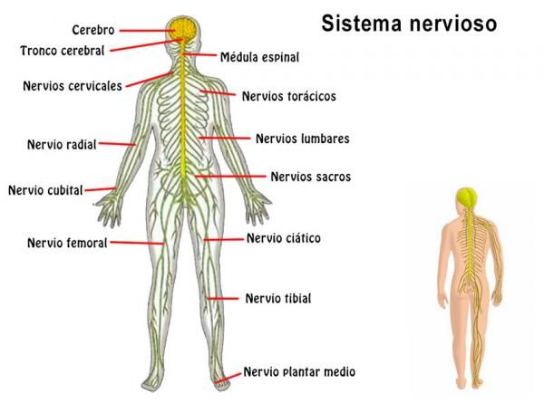
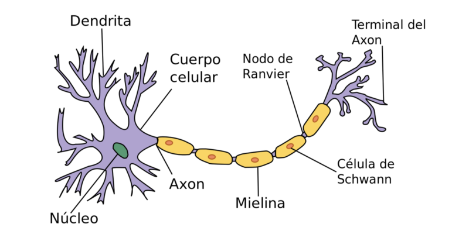

Sistema Nervioso

1. Organización Anatómica
El sistema nervioso se divide fundamentalmente en dos partes: el Sistema Nervioso Central (SNC), compuesto por el encéfalo y la médula espinal (nuestro centro de procesamiento), y el Sistema Nervioso Periférico (SNP), que conecta al SNC con el resto de los órganos y extremidades.
2. La Unidad Funcional: La Neurona
La neurona es la célula especializada en recibir, procesar y transmitir información mediante impulsos electroquímicos. A diferencia de otras células, las neuronas son altamente especializadas: tienen dendritas (receptores), un cuerpo celular (soma) y un axón (transmisor).

3. Historia y Descubrimientos Clave
El estudio del sistema nervioso evolucionó drásticamente gracias a Santiago Ramón y Cajal, quien mediante la tinción de plata demostró que las neuronas son células independientes (Teoría Neuronal), refutando la idea de una red continua.
4. Datos de Alto Impacto
- Velocidad de conducción: Los impulsos nerviosos mielinizados pueden viajar hasta a 120 m/s.
- Consumo energético: Aunque pesa solo el 2% del cuerpo, el cerebro consume cerca del 20% de tu energía total.
5. La Sinapsis: El Lenguaje Neuronal
La sinapsis es el proceso de comunicación entre neuronas. No hay un contacto físico directo; en su lugar, existe un pequeño espacio llamado hendidura sináptica. Cuando el impulso eléctrico llega al final del axón, libera sustancias químicas llamadas neurotransmisores, que saltan el espacio y se unen a la siguiente neurona para transmitir el mensaje.
6. Sistema Nervioso Autónomo y Somático
El sistema nervioso se clasifica funcionalmente en:
- Sistema Somático: Controla los movimientos voluntarios y la recepción de información sensorial (ej: escribir, caminar).
- Sistema Autónomo: Regula funciones involuntarias y vitales (ej: latido del corazón, digestión). Se divide a su vez en simpático (prepara para la acción) y parasimpático (promueve el reposo y la recuperación).
7. Cuidado del Sistema Nervioso
La salud del sistema nervioso depende de factores como la higiene del sueño, una nutrición rica en ácidos grasos (como omega-3) y la estimulación cognitiva constante. Enfermedades neurodegenerativas o trastornos del ánimo pueden ocurrir si el equilibrio del sistema se ve afectado, lo que subraya la importancia de la prevención.
8. Los Neurotransmisores: Mensajeros Químicos
La transmisión sináptica depende de moléculas especializadas. Los más relevantes para el estudio académico son:
- Lóbulo Frontal: Encargado de funciones ejecutivas, razonamiento, planificación y control motor.
- Lóbulo Parietal: Procesa información sensorial como el tacto, la presión, la temperatura y el dolor.
- Lóbulo Temporal: Especializado en el procesamiento auditivo, la memoria y la comprensión del lenguaje.
- Lóbulo Occipital: El centro principal para el procesamiento de la información visual.